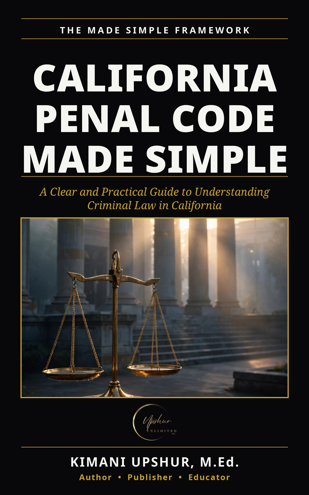

California Penal Code Made Simple
by Kimani Upshur, M.Ed.
Most people don’t think about the law—until they’re forced to. A traffic stop. A misunderstanding. A bad decision in the wrong moment. Suddenly, you’re inside a system you don’t understand. The California Penal Code is thousands of pages long, written in dense legal language, and designed for professionals—not everyday people. This book changes that. California Penal Code Made Simple is a clear, practical guide to understanding how the criminal justice system actually works—and how to protect yourself within it. Inside, you’ll learn: • How criminal law is structured in California • The difference between infractions, misdemeanors, and felonies • What actually happens after an arrest • How charges, bail, and plea deals work • The rights you have—and how to use them • The most common legal mistakes people make • What happens after a conviction • How to think clearly in high-pressure legal situations This is not legal advice. It’s something just as important: Understanding. Because when you understand the system, you make better decisions inside it. Whether you’re a student, parent, worker, or simply someone who wants to be prepared—this book gives you the clarity most people don’t have until it’s too late. Know your rights. Think clearly. Protect yourself.
Get This Book
Ebook $4.99 — also check your favorite retailer.
- Publisher
- Upshur Unlimited, LLC
- Author
- Kimani Upshur, M.Ed.
- Format
- Ebook
- Language
- English